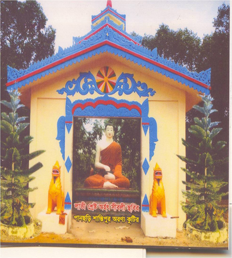

বৈচিত্র্যময় খাগড়াছড়ি
পানছড়ি উপজেলা হতে চেঙ্গী নদীর অপর তীরে ৫কিঃ মিঃ দক্ষিণে ছোট্ট টিলার উপর এই অরণ্য কুটির।
খাগড়াছড়ি জেলা শহর হতে খাগড়াছড়ি-পানছড়ি সড়ক দিয়ে ২৫ কিঃ মিঃ রাস্তা অতিক্রম করে পানছড়ি বাজারে পৌঁছার পর দক্ষিণ দিকের ৫ কিঃ মিঃ পথ অতিক্রম করলেই দেখা যাবে প্রকৃতির বুকে অপরূপ শোভা নিয়ে দাঁড়িয়ে আছে শান্তিপুর অরণ্য কুটির।
পানছড়ি পর্যন্ত পাকা রাস্তা। চেঙ্গীব্রীজ পার হবার পর কিছু অংশ পাকা বাকী অংশ হেরিংবোন। পানছড়ি পর্যন্ত বাসে, অতঃপর কার, জীপযোগে যাওয়া যায়।
খাগড়াছড়ি জেলার অন্যতম সৌন্দর্য-মন্ডিত এলাকা পানছড়ি উপজেলা। এ উপজেলার শান্তিপুর নামক স্থানে ইংরেজী ১৯৯৯ সনে শান্তিপুর অরণ্য কুটির স্থাপিত হয়েছিল।
বিশাল এলাকাজুড়ে অরণ্যে আবৃত বলেই হয়তো এর নামকরণ হয়েছে অরণ্য কুটির। নিরিবিলি প্রাকৃতিক পরিবেশে ধ্যান সাধনার জন্য ভিক্ষুরা এই কুটিরটি ব্যবহার করেন বলে জনশ্র“তি আছে।
এটি মূলতঃ বৌদ্ধ মন্দির। এই মন্দিরের প্রধান আকর্ষণ হল এখানেই বাংলাদেশের তথা দক্ষিণ এশিয়ার সবচেয়ে বড় বুদ্ধ মূর্তিটি রয়েছে। যার উচ্চতা ৪২ফুট।
প্রতিদিন বহু পর্যটক মূর্তিটি দেখতে ভিড় জমান এই কুটিরে। ইহা একটি হিংসা-বিদ্বেষবিহীন মৈত্রীপূর্ণ ধর্মীয় প্রতিষ্ঠান। এই ধর্মীয় প্রতিষ্ঠানটি দর্শন করার ক্ষেত্রে জাতি-ধর্ম-বর্ণ নির্বিশেষে সকল সম্প্রদায়ের জন্য উন্মুক্ত।
বর্তমানে ইহা একটি তীর্থস্থান এবং অন্যদিকে একটি দর্শনীয় স্থান হিসেবে পরিচিতি লাভ করেছে। এখানে ২৫টিরও বেশী পর্ণ কুটির রয়েছে এবং উপ-কুটিরও রয়েছে।

প্রত্যাকটি কুটিরে ও উপকুটিরে একজন করে ভিক্ষু ও শ্রামণ অবস্থান করে ভাবনা ও ধ্যানে মগ্ন থাকেন। বর্তমানে ভিক্ষু শ্রামণসহ ৪০জন অবস্থান করছেন।
শান্তিপুর অরণ্য কুটিরে সবচেয়ে উল্লেখযোগ্য স্থাপনাগুলোর মধ্যে সাড়ে ৪৮ফুট উচ্চতার গৌতম বুদ্ধের মূর্তি, লাভীশ্রেষ্ঠ সিবলী মহাস্থবিরের মন্দিরসহ মূর্তি, মারবিজয়ী উপগুপ্ত মহাস্থবিরের মূর্তি, অধ্যক্ষ মহোদয়ের আবাসস্থল “মৈত্রী ভবন”, ১০০ হাত দৈর্ঘ্যরে ভিক্ষুশালা, ৬০ হাত দৈর্ঘ্যরে দেশনাঘর, ৮০ হাত দৈর্ঘ্যবিশিষ্ট ভোজনশালা এবং বড় বুদ্ধ মূর্তির ছাদ।
এ সমস্ত স্থাপনাগুলো বাংলাদেশ সরকারের আর্থিক সহায়তা, বিভিন্ন এলাকার ধর্মের প্রতি শ্রদ্ধাশীল দাতা ব্যক্তিদের আর্থিক সাহায্য এবং এলাকাবাসীর কায়িক, মানসিক ও আন্তরিক সহযোগিতার ফলে গড়ে উঠেছে। একদিকে প্রকৃতির ভারসাম্য রক্ষা করা এবং অন্যদিকে কুটিরের আয়ের উৎস হিসেবে খালি জায়গায় চারা রোপণ করে বাগান সৃজন করা হয়েছে।
এ পবিত্র ধর্মীয় প্রতিষ্ঠানটি প্রতিষ্ঠিত হবার পর থেকে সাম্য ও মৈত্রীর প্রভাবে এলাকার বিভিন্ন সম্প্রদায়ের লোক পারস্পরিক সম্প্রীতি পোষণ করে শান্তিতে বসবাস করছেন এবং ধর্মীয়, সামাজিক ও অর্থনৈতিক ক্ষেত্রে যথেষ্ট উন্নতি সাধিত হয়েছে।
প্রতি বছর বৌদ্ধ ধর্মের শ্রেষ্ঠ দান কঠিন চীবর দান যথাযথভাবে উদ্যাপন করা হয় এবং উক্ত ধর্মীয় অনুষ্ঠানে বিভিন্ন এলাকা থেকে হাজার হাজার লোকের সমাগম ঘটে।